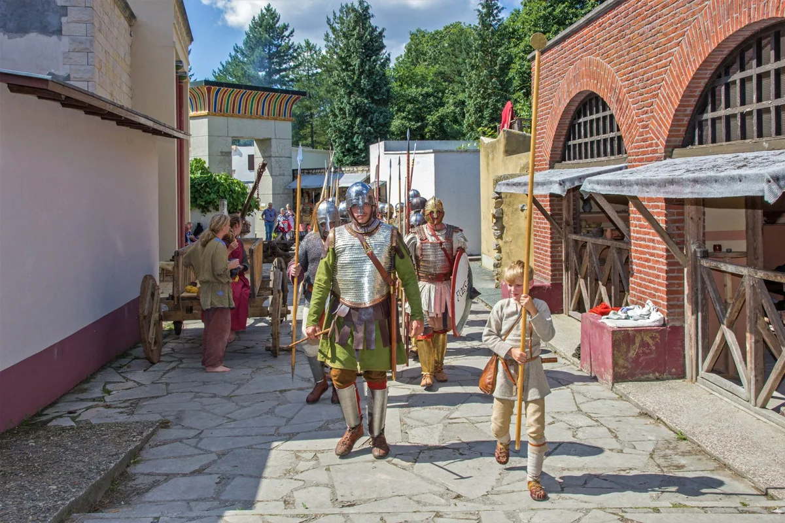

Nieuws ·
Romeinenpaspoort Gelderland feestelijk gelanceerd bij Museumpark Orientalis

Museumpark Orientalis in Heilig Landstichting presenteert op zaterdag 24 oktober het nieuwe Romeinenpaspoort Gelderland. Met dit boekje gaan kinderen langs dertien Romeinse erfgoedlocaties in de provincie om daar stempels te verzamelen. De lancering gaat gepaard met een middag vol Romeinse activiteiten, en het museumpark is die dag gratis toegankelijk.
Het paspoort is bedoeld om kinderen op een speelse manier kennis te laten maken met de Romeinse tijd, bijna tweeduizend jaar geleden. Het gaat daarbij om verhalen over soldaten en forten, opvallende archeologische vondsten en hoe mensen destijds leefden. Op elk van de dertien deelnemende plekken zijn Romeinse voorwerpen te zien, kunnen kinderen opdrachten doen en krijgen ze een stempel die alleen op die locatie te verkrijgen is.
Programma
De middag start om 13.30 uur in Civitas Romana, het Romeinse deel van het museumpark. Een half uur later reikt een Romeinse scriptor van de levende geschiedenisgroep Corbvlo de eerste paspoorten uit aan een aantal kinderen, waarna ook de eerste stempel wordt gezet. Vanaf 14.15 uur wordt de Romeinse straat bevolkt door soldaten en andere reenactors. Bezoekers kunnen oude ambachten bekijken, zelf aan het werk in de Romeinenwerkplaats, Romeinse spellen spelen en gerechten uit die tijd proeven. Om 15.00 uur vertrekt een erfgoedwandeling langs het Romeinse aquaduct.
De lancering wordt georganiseerd door Museumpark Orientalis samen met het programma Romeinen in Gelderland. Ze maakt deel uit van het jubileumjaar waarin wordt gevierd dat de Limes, de vroegere noordgrens van het Romeinse Rijk, vijf jaar op de Werelderfgoedlijst staat.
De introductie is op zaterdag 24 oktober van 13.30 tot 17.00 uur bij Museumpark Orientalis, Profetenlaan 2 in Heilig Landstichting. De toegang is de hele dag gratis en bezoekers kunnen er kosteloos een eigen Romeinenpaspoort ophalen. Meer informatie staat op www.museumparkorientalis.nl.